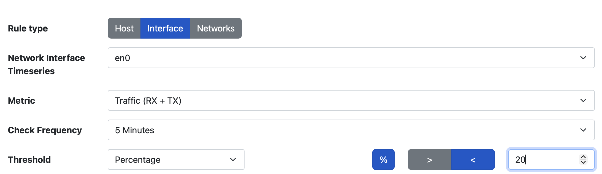

Преобразуйте сетевые данные в действенные инфраструктурные решения с помощью ntopng
Введение
Каждая ИТ-команда сталкивается с одной и той же проблемой: какой емкости сети достаточно? Слишком мало, и приложения останавливаются в часы пик. Слишком много — и вы тратите бюджет на инфраструктуру, которая вам не нужна.
Планирование мощности не должно быть догадками. Используя правильные инструменты и методологию, вы можете прогнозировать рост, выявлять узкие места до того, как они вызовут сбои в работе, и принимать основанные на данных решения об инвестициях в инфраструктуру.
ntopng— высокопроизводительный анализатор сетевого трафика — обеспечивает наглядность, необходимую для эффективного планирования мощности. . Независимо от того, управляете ли вы сетью небольшого офиса или инфраструктурой крупного предприятия, ntopng предоставляет важные показатели: использование полосы пропускания, распределение протоколов, самые популярные собеседники и исторические тенденции.
В этом руководстве мы рассмотрим практическое планирование мощности с использованием инструментов ntop, от базового мониторинга до продвинутых методов прогнозирования.
Часть 1. Почему традиционное планирование мощности не дает результатов
Прежде чем погрузиться в ntopng, давайте поймем, почему многие попытки планирования мощности терпят неудачу:
Проблема только с «часами пик»
Многие команды смотрят только на пиковую загрузку и умножают ее на коэффициент безопасности. Этот подход упускает важные закономерности:
- Сезонные изменения (отчетность на конец месяца, трафик в праздничные дни)
- Смены приложений (новые сервисы неожиданно потребляют пропускную способность)
- Асимметричный рост (количество загрузок растет быстрее, чем загрузок)
Пробел в видимости
Стандартный мониторинг SNMP сообщит вам сколько? трафик, но не какой трафика . Без прозрачности приложений вы можете выделить слишком много ресурсов для «свиней пропускной способности», которые на самом деле являются критически важными для бизнеса приложениями, и при этом упустить возможности оптимизации для второстепенного трафика.
Реактивная ловушка
Без исторических тенденций вы всегда реагируете на проблемы, а не предвидите их. К тому моменту, когда пользователи жалуются, проблема с емкостью уже влияет на производительность.
ntopng решает эти проблемы обеспечивая глубокую проверку пакетов, хранение исторических данных и настраиваемые оповещения — и все это на одной платформе. .
Часть 2: ntopng Метрики, важные для планирования мощности
Давайте рассмотрим конкретные показатели ntopng, которые вы будете использовать для эффективного планирования мощности.
2.1 Тенденции использования полосы пропускания
Основой планирования мощности является понимание нормальное и ненормальное использование полосы пропускания. Панель управления ntopng обеспечивает просмотр в режиме реального времени и за прошлые периоды:
- Графики пропускной способности интерфейса: просмотр входящего/исходящего трафика за выбранные периоды времени.
- Рекорды пиковой загрузки: Определите, когда ваша сеть находится под максимальной нагрузкой.
- Анализ на основе процентилей: расчеты 95-го процентиля для точного моделирования выставления счетов и мощности.
Что посмотреть: Следите за устойчивой загрузкой критически важных каналов выше 70 % — это указывает на то, что пропускная способность вскоре может стать узким местом.
2.2 Самые популярные спикеры и потребители
Зная ВОЗ использует полосу пропускания так же важно, как знать сколько?. Просмотры хостов ntopng показывают вам :
- Лучшие местные хосты: Какие внутренние устройства генерируют больше всего трафика
- Топ удаленных хостов: Внешние пункты назначения, потребляющие вашу пропускную способность.
- Разговорные пары: Трафик между конкретными конечными точками.
Реальный пример: Внезапное изменение количества говорящих может указывать на развертывание нового приложения, скомпрометированный хост или изменение поведения пользователей — все это факторы при планировании мощности.
2.3 Распространение протоколов и приложений
Здесь ntopng nDPI глубокая проверка пакетов блестит . Вы можете увидеть, какие именно приложения привлекают ваш трафик:
- Просмотр веб-страниц (HTTP/HTTPS)
- Стоковое видео (YouTube, Netflix, Zoom)
- Передача файлов (FTP, SMB, NFS)
- Трафик базы данных (MySQL, PostgreSQL, MongoDB)
- Облачные сервисы (Office 365, Google Workspace, AWS)
Почему это важно: Если 60 % вашей пропускной способности приходится на потоковое видео, планирование мощности отличается от сети, в которой доминирует репликация базы данных. Вы можете установить приоритет политик QoS перед добавлением пропускной способности.
2.4 TCP Показатели эффективности
Пропускная способность — не единственное ограничение пропускной способности. Плохая производительность TCP может сделать большую полосу пропускания непригодной для использования. :
- Скорость ретрансляции: Высокая частота повторных передач указывает на перегрузку или потерю пакетов.
- Время туда и обратно (RTT): Увеличение задержки предполагает рост очередей
- Пакеты с нарушением порядка: может указывать на проблемы с путями или проблемы с балансировкой нагрузки.
Эти показатели помогут вам отличить «нужно больше пропускной способности» от «нужно улучшить оптимизацию сети».
2.5 Записи потоков и схемы соединений
Для расширенного планирования мощности данные о потоке ntopng показывают :
- Количество одновременных подключений: сколько одновременных сеансов обрабатывает ваш брандмауэр/балансировщик нагрузки.
- Новые тарифы на подключение: критично для планирования емкости устройства с отслеживанием состояния.
- Распределение продолжительности потока: Короткие и долгоживущие потоки указывают на разные шаблоны приложений.
Часть 3. Настройка ntopng для планирования мощности
3.1 Установка и базовая конфигурация
Давайте запустим ntopng, учитывая планирование мощности. На Ubuntu Linux :
бить
# Add the ntop repository
wget https://packages.ntop.org/apt-stable/42.04/all/apt-ntop-stable.deb
apt install ./apt-ntop-stable.deb
apt update
# Install ntopng and dependencies
apt install -y ntopng
3.2 Оптимизированная конфигурация для долгосрочных данных
Для планирования мощности вам нужны исторические данные. Настройте ntopng, чтобы хранить то, что важно. :
# /etc/ntopng/ntopng.conf
--http-port=3000
--interface=eth0
--local-networks="192.168.0.0/16"
# Enable historical data storage
-F=clickhouse
# Increase host/flow limits for production networks
-x 1000000 # Max hosts
-X 2000000 # Max flows
# DNS resolution for better host identification
--dns-mode=1
3.3 Включение SNMP для видимости инфраструктуры
ntopng может опрашивать сетевые устройства через SNMP, обеспечивая полную видимость инфраструктуры. :
- Перейдите к Настройки > SNMP Устройства
- Добавьте свои маршрутизаторы, коммутаторы и межсетевые экраны
- Давать возможность тегирование ролей интерфейса (ядро/распределение/доступ) для лучшего понимания топологии
- Настройте SNMPv3 для производственных сред.
Эта интеграция позволяет сопоставить трафик приложений с использованием интерфейса, что важно для точного определения того, где существуют ограничения пропускной способности.
3.4 Настройка коллекции NetFlow/sFlow
Для анализа трафика маршрутизатора/коммутатора настройте ntopng в качестве коллектора потока. :
# On your ntopng server, enable flow collection
ntopng -i "tcp://*:5556" # For NetFlow/IPFIX
Затем настройте свои сетевые устройства для экспорта потоков на IP-адрес вашего сервера ntopng через порт 5556.
Часть 4. Создание базовой линии планирования мощности
Прежде чем прогнозировать будущие потребности, вы должны понять свою текущую сеть. Вот как установить базовую линию с помощью ntopng.
4.1 30-дневный базовый уровень
Соберите данные как минимум за 30 дней, чтобы учесть еженедельные и ежемесячные закономерности. Сосредоточиться на:
- Ежедневные часы пик (обычно с 9 до 11 утра и с 13 до 16 часов)
- Еженедельные вариации (Понедельник часто отличается от пятницы)
- Шаблоны конца месяца (финансовая отчетность, резервное копирование)
4.2 Ключевые базовые показатели для документирования
Создайте таблицу планирования мощности со следующими показателями из ntopng:
| Метрика | Текущее значение | Тенденция роста | Порог |
|---|---|---|---|
| Пиковая входящая пропускная способность | 450 Mbps | +15% г/г | 80% ссылки |
| Пиковая исходящая пропускная способность | 120 Mbps | +8% г/г | 80% ссылки |
| Параллельные соединения | 8,500 | +22% г/г | 80 % от лимита брандмауэра |
| Топ протокол % | HTTPS (65%) | Стабильный | Н/Д |
| Пиковая скорость передачи пакетов | 85К pps | +12% г/г | В зависимости от устройства |
| DNS запросов/сек. | 320 | +18% г/г | 1,000 |
4.3 Определение нормальных диапазонов
ntopng графики таймсерий поможет вам визуализировать нормальную изменчивость. Экспортируйте эти данные еженедельно и рассчитывайте :
- Средняя пиковая загрузка
- Стандартное отклонение в рабочее время
- 99-й процентиль пики (что следует планировать)
Часть 5. Расширенные методы планирования мощности с помощью ntopng
5.1 Анализ тенденций и прогнозирование
Имея достаточные исторические данные, вы можете спрогнозировать будущие потребности. ntopng историческая отчетность показывает тенденции с течением времени :
- Перейдите к Отчеты > Исторические
- Выберите интерфейс или хост
- Выбирать Трафик метрика
- Установить временной диапазон (последние 90 дней, в прошлом году)
- Экспорт данных для анализа линий тренда
Простой метод прогнозирования: Рассчитайте ежемесячные темпы роста и примените их к текущему использованию:
Projected Peak = Current Peak × (1 + Monthly Growth Rate)^Months
Если ваш пик составляет 450 Mbps и растет на 2% в месяц, через 12 месяцев вам понадобится:
450 × (1,02)^12 = 450 × 1,268 = 570 Mbps
5.2 Планирование мощности с учетом приложений
Разные приложения имеют разные траектории роста. ntopng нарушение протокола позволяет планировать по категориям приложений :
Пример анализа:
- Трафик видеоконференций: +35% г/г (рост удаленной работы)
- Репликация базы данных: +5% г/г (стабильно)
- Синхронизация облачного хранилища: +50% г/г (внедрение нового инструмента)
Такая детализация поможет вам:
- Обоснование модернизации SD-WAN для трафика в реальном времени
- Планируйте политику QoS до перегрузки
- Определить возможности оптимизации (кэширование видеотрафика)
5.3 Моделирование сценариев «что, если»
Используйте данные ntopng для моделирования сценариев:
Сценарий А: Открытие нового офиса
- Текущий трафик удаленных работников: 25 Mbps на 100 пользователей.
- Новый офис: 50 пользователей
- Прогнозируемая дополнительная пропускная способность: пиковая 12,5 Mbps
Сценарий Б: Миграция в облако
- Текущий трафик локальных приложений: 80 Mbps внутренний.
- После миграции: становится 80 Mbps подключенным к Интернету
- Результат: использование интернет-каналов удвоилось.
5.4 Анализ автономных систем для интернет-провайдеров/предприятий
Если вы интернет-провайдер или многодомное предприятие, ntopng 6.6 представляет Аналитика автономных систем (АС) :
- Матрицы трафика AS: просмотр трафика между транзитными и исходными AS.
- Лучшие участники AS: Какие сети привлекают ваш трафик
- Анализ тенденций на основе AS: Отслеживание роста по поставщикам услуг верхнего уровня.
Это помогает ответить на такие вопросы, как: "Растет ли трафик нашего транзитного провайдера быстрее, чем трафик пиринга? Должны ли мы добавить еще одного узла?"
Часть 6. Примеры планирования мощностей из реальной жизни
Пример 1: Быстрорастущая SaaS-компания
Ситуация: SaaS-компания со штатом 200 человек и 500 Mbps интернет-каналом. Пользователи сообщают о низкой производительности в полдень.
ntopng расследование:
- Пиковая загрузка: 420 Mbps (84% канала)
- Топ протоколов: видеоконференции (40%), облачное хранилище (25%), веб-трафик (20%)
- Видеотрафик вырос на 60% по сравнению с прошлым годом
- Трафик синхронизации облачного хранилища увеличился вдвое за 6 месяцев
Рекомендация:
- Обновите ссылку до 1 Gbps в течение 6 месяцев (на основе квартального роста на 18 %).
- Внедрить QoS приоритетность видеоконференций.
- Рассмотрите возможность локального кэширования для облачного хранилища.
Пример 2: Областная больница
Ситуация: Больница с магистральной сетью 10 Gbps, планируется модернизация системы ЭМИ.
ntopng расследование:
- Текущий трафик EMR: средний 150 Mbps, пиковый 400 Mbps.
- Характер трафика EMR: самый высокий в 8–10 утра (утренние обходы).
- Трафик репликации базы данных: 200 Mbps непрерывно.
- Трафик изображений PACS: 300 Mbps пульсирующий
Рекомендация:
- Обновите основные коммутаторы до 25 Gbps для обработки изображений трафика.
- Изолировать трафик PACS на отдельном VLAN
- Планируйте рост EMR на 30 % после обновления
Пример 3: Интернет-провайдер поставщика услуг
Ситуация: Региональный интернет-провайдер с 100 Gbps восходящим потоком, планирующий пропускную способность для ежегодного роста числа подписчиков на 20%.
- Пиковый абонентский трафик: 85 Gbps
- Потоковое видео: 70% трафика (Netflix, YouTube, Prime)
- Игровой трафик: 15% и рост на 40% в годовом сопоставлении
- Бизнес-трафик: 10%, но более высокий приоритет
Рекомендация:
- Обновление до 200 Gbps в течение 18 месяцев.
- Равноправие с основными CDN для снижения затрат на транзит
- Внедрить квоты на подписчиков для активных пользователей.
Часть 7. Настройка оповещений для упреждающего планирования
Не ждите, пока пользователи начнут жаловаться. Настройте оповещения ntopng, чтобы уведомить вас до того, как емкость станет критической. Вы можете установить оповещения, используя Политики -> Правила трафика, как показано ниже на этом рисунке.

7.1 Правила объема трафика
Создавайте правила, которые срабатывают при достижении пороговых значений. :
Правила уровня интерфейса:
Target: Interface ens160
Metric: Total traffic
Frequency: Daily
Threshold: Upperbound s0% of link capacity
Action: Email network team
Правила на уровне хоста:
Target: 192.168.1.50 (critical server) Metric: Total traffic Frequency: 5 minutes Threshold: Upperbound 100 Mbps (alert if exceeded) Action: Email and Slack notification
7.2 Оповещения о темпах роста
Обнаружение аномального роста, который может указывать на необходимость планирования:
Target: Interface ens160 Metric: Total traffic Frequency: Weekly Threshold: Percentage increase > 20% week-over-week Action: Create ticket for review
7.3 Оповещения, специфичные для протокола
Мониторинг конкретных приложений на предмет неожиданного роста:
Target: All local hosts Metric: Zoom traffic Frequency: Daily Threshold: Upperbound 50% increase from baseline Action: Investigate new collaboration patterns
Часть 8. Оптимизация перед обновлением
Иногда проблемы с пропускной способностью связаны не с пропускной способностью, а с неэффективное использование. Прежде чем тратить бюджет на обновления, используйте ntopng, чтобы определить возможности оптимизации.
8.1 Обнаружение потери пропускной способности
- Ненужная потоковая передача: Неделовое видео в рабочее время.
- Передача больших файлов: Резервные копии в личном облаке.
- Неэффективные протоколы: Передача несжатых данных
- Ретрансляции: 3%+ указывает на перегрузку или ошибки.
8.2 Реализация QoS на основе данных
Видимость протокола ntopng подскажет вам, что именно следует расставить по приоритетам:
| Уровень приоритета | Типы трафика | QoS Действие |
|---|---|---|
| Критический | VoIP, видеоконференции, ERP | Гарантированная минимальная пропускная способность |
| Нормальный | Интернет, электронная почта, обмен файлами | Честная очередь |
| Низкий | Обновления программного обеспечения, резервное копирование, потоковая передача | Ограничение скорости |
8.3 Анализ затрат на пиринг и транзит
Для многодомных сетей аналитика AS от ntopng помогает оптимизировать затраты провайдера. :
- Определите, какие AS управляют трафиком
- Оцените пиринговые возможности
- Обнаружение трафика, который можно выгрузить в CDN
Часть 9. Масштабирование ntopng для больших сетей
По мере роста вашей сети ваш мониторинг также должен масштабироваться. Вот как работать с ntopng в крупных сетях .
9.1 Определение момента настройки
Следите за этими показателями :
- Красные значки в правом нижнем углу укажите недостаточно места для хостов или потоков
- Отбрасывание пакетов означает, что ntopng не успевает за скоростью трафика
- Высокий уровень использования CPU на сервере мониторинга
9.2 Увеличение мощности
# Increase host/flow limits -x 500000 # Max hosts (if seeing 50,000 active) -X 1000000 # Max flows (if seeing 200,000 flows)
9.3 RSS и многоядерное масштабирование
Для сред с высокой пропускной способностью используйте RSS (масштабирование на стороне приема) распределить обработку пакетов по ядрам CPU :
- Проверьте поддержку драйвера NIC (рекомендуются драйверы Intel)
- Настройка нескольких очередей RX
- Используйте интерфейсы просмотра ntopng для агрегирования.
Пример конфигурации для мониторинга 10 Gbps :
# In ntopng.conf -i=eth0@0 -i=eth0@1 -i=eth0@2 -i=eth0@3 -i=eth0@4 -i=eth0@5 -i=view:all
Это распределяет трафик по 6 очередям, позволяя нескольким ядрам CPU обрабатывать нагрузку. Обратите внимание, что для 10Gbit+ мы предлагаем вам предварительно обработать трафик, используя nProbe или (лучше) nProbe Cento, как описано ниже.
9.4 Распределенное развертывание с nProbe
Для очень больших сетей отдельный сбор от анализа. :
На пунктах сбора (филиальные маршрутизаторы, базовые коммутаторы):
nprobe -i eth0 -n none --zmq "tcp://*:5556"
На центральном сервере ntopng:
ntopng -i "tcp://<probe1-IP>:5556" -i "tcp://<probe2-IP>:5556"
Эта архитектура масштабируется до сотен точек мониторинга, сохраняя при этом централизованный анализ. Как возможный вариант, вы можете отправить все потоки в один и тот же порт ntopng. Пример
На пунктах сбора (филиальные маршрутизаторы, базовые коммутаторы):
nprobe -i eth0 -n none --zmq "tcp://<ntopng-IP>:5556" --zmq-probe-mode
На центральном сервере ntopng:
ntopng -i "tcp://<ntopng-IP>:5556c"
Убедитесь, что не отправляете слишком много потоков на один и тот же интерфейс сбора, иначе вы окажете слишком сильное давление на ntopng. Лучше определить несколько интерфейсов коллекций и объединить их с интерфейсом представления.
Часть 10. Построение процесса планирования мощности
10.1 Еженедельный обзор (30 минут)
- Проверьте самых популярных собеседников на предмет неожиданных изменений
- Обзор тенденций использования интерфейса
- Обратите внимание на все активированные оповещения
10.2 Ежемесячный анализ (2 часа)
- Обновить базовую таблицу новыми данными
- Рассчитайте ежемесячные темпы роста
- Просмотрите изменения в распространении протоколов
- Определите 5 основных драйверов роста
10.3 Квартальное планирование (4 часа)
- Создавайте прогнозы тенденций на следующие 12–18 месяцев.
- Обзор предстоящих проектов (новые офисы, приложения)
- Обновление пороговых значений емкости и оповещений
- Планируйте бюджет на предстоящие обновления
10.4 Годовая стратегия (полный день)
- Комплексный обзор сети
- Долгосрочное архитектурное планирование
- Циклы обновления технологий
- Обучение персонала и обновление инструментария
Заключение: от реактивного к проактивному
Планирование мощности с помощью ntopng превращает вашу ИТ-команду из пожарные к стратегические планировщики. Вместо того, чтобы карабкаться, когда ссылки перенасыщаются, вы будете уверенно предоставлять руководству рекомендации, основанные на данных.
Набор инструментов ntop дает вам:
- Видимость в то, что на самом деле происходит в вашей сети
- История понимать тенденции
- Детализация планировать по приложению, а не только по байтам
- Масштабируемость который растет вместе с вашей сетью
- Действенные оповещения которые предупреждают до того, как возникнут проблемы
Помните: идеальное планирование мощности заключается не в устранении всех рисков, а в принятии обоснованных решений на основе наилучших доступных данных. ntopng предоставляет эти данные; ваш опыт превращает это в стратегию.
Начните свой путь планирования мощности сегодня:
- Установите ntopng, если вы еще этого не сделали.
- Настройка хранилища исторических данных
- Настройте базовую таблицу
- Создайте свой первый прогноз роста
- Поделитесь результатами со своей командой
Сеть завтрашнего дня строится сегодня — убедитесь, что у вас есть видимость, чтобы построить ее правильно.
Наслаждаться !